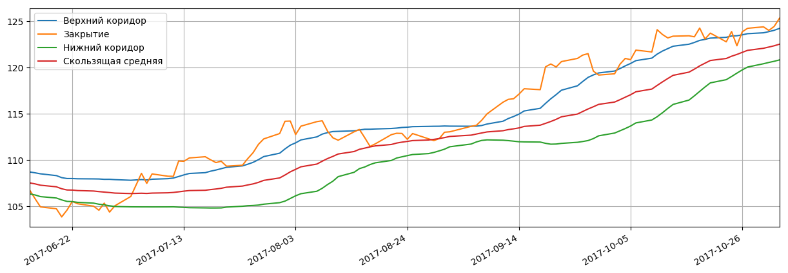
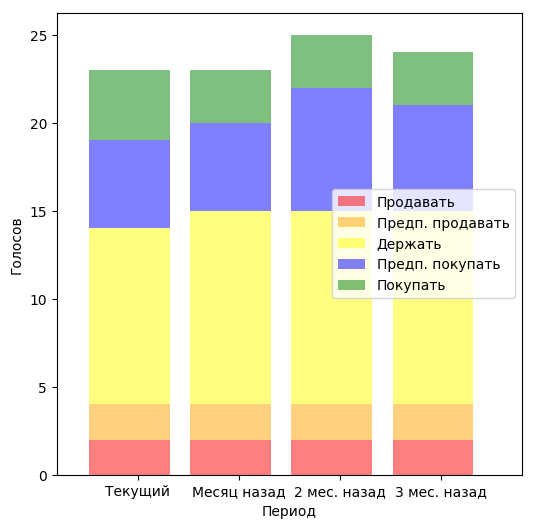
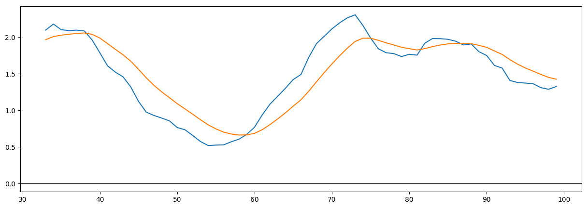

Котировки акций: Показать всеЗначение стоимости открытия, минимальной, максимальной и стоимости закрытия торгов на указаную даты, а также объемы продаж. ?
| Дата | Открытие | Минимум | Максимум | Закрытие | Объем |
|---|---|---|---|---|---|
| 2017-11-02 | 125.050003 ▲ | 124.940002 ▲ | 125.489899 ▲ | 125.309998 ▲ | 153 058.0 ▼ |
| 2017-11-01 | 124.290001 ▲ | 124.180000 ▲ | 124.919998 ▲ | 124.430000 ▲ | 194 200.0 ▲ |
| 2017-10-31 | 123.980003 ▼ | 123.669998 ▼ | 124.139999 ▼ | 124.000000 ▼ | 110 400.0 ▼ |
| 2017-10-30 | 124.250000 ▲ | 124.070000 ▲ | 124.440002 ▲ | 124.389999 ▲ | 113 500.0 ▲ |
| 2017-10-27 | 123.879997 ▲ | 123.669998 ▲ | 124.239998 ▲ | 124.230003 ▲ | 101 800.0 ▼ |
Японские свечи, объемы продаж, средние скользящие 20дн.,50дн.:Самый важный технический индикатор на бирже.
Подробно... ?
Основные фин.показатели:Основные финансовые показатели деятельности предприятия: Баланс, Доходы/затраты, Движение денег - годовые и квартальные.
Нажмите на заглавия чтобы развернуть все. ?
| Cash-flow (квартал), In Millions of JPY (except for per share items) | 3 мес. 2017-06-30 | 12 мес. 2017-03-31 | 9 мес. 2016-12-31 | 6 мес. 2016-09-30 | 3 мес. 2016-06-30 |
|---|---|---|---|---|---|
| Поступления от операционной деятельности | 1,072,365.00 | 3,414,237.00 | 2,161,288.00 | 1,574,376.00 | 1,178,213.00 |
| Поступления от инвестиционной деятельности | -1,017,778.00 | -2,969,939.00 | -2,159,208.00 | -1,034,924.00 | -558,708.00 |
| Поступления от финансовой деятельности | -109,722.00 | -375,165.00 | -377,167.00 | -566,509.00 | -164,483.00 |
| Чистый остаток денежных средств | -54,246.00 | 55,647.00 | -388,642.00 | -172,424.00 | 334,830.00 |
| Доходы (квартал), In Millions of JPY (except for per share items) | 3 мес. 2017-06-30 | 3 мес. 2017-03-31 | 3 мес. 2016-12-31 | 3 мес. 2016-09-30 | 3 мес. 2016-06-30 |
| Общий доход | 7,047,606.00 | 7,442,473.00 | 7,084,187.00 | 6,481,420.00 | 6,589,113.00 |
| Общие эксплуатационные расходы | 6,473,312.00 | 7,003,552.00 | 6,645,601.00 | 6,006,785.00 | 5,946,883.00 |
| Операционный доход | 574,294.00 | 438,921.00 | 438,586.00 | 474,635.00 | 642,230.00 |
| Чистая прибыль | 613,056.00 | 398,405.00 | 486,531.00 | 393,708.00 | 552,465.00 |
| Dividends per Share - Common Stock Primary Issue | 0.00 | 110.00 | 0.00 | 100.00 | 0.00 |
| Баланс (квартал), In Millions of JPY (except for per share items) | На 2017-06-30 | На 2017-03-31 | На 2016-12-31 | На 2016-09-30 | На 2016-06-30 |
| Всего текущих активов | 18,062,537.00 | 17,833,695.00 | 17,038,147.00 | 15,653,139.00 | 16,592,413.00 |
| Недвижимость/Имущество/Оборудование Всего | 23,833,954.00 | 23,649,094.00 | 23,621,709.00 | 21,910,744.00 | 21,922,883.00 |
| Всего активов | 49,456,031.00 | 48,750,186.00 | 48,111,485.00 | 43,776,105.00 | 44,524,374.00 |
| Общий долгосрочный долг | 10,320,161.00 | 9,911,596.00 | 9,881,275.00 | 8,706,063.00 | 9,069,856.00 |
| Всего обязательств | 31,095,271.00 | 30,749,497.00 | 30,334,828.00 | 26,900,745.00 | 27,915,563.00 |
| Общий капитал | 18,360,760.00 | 18,000,689.00 | 17,776,657.00 | 16,875,360.00 | 16,608,811.00 |
Полосы Боллинджера: Технический индикатор: Выход "Закрытия" из коридора Боллинджера есть сигналом о "нервозности" рынка ?
Последние финансовые новости: Показать всеПоследнии финансовые новости компании. Нажмите на заглавии чтобы развернуть всю новость. Внимание: машинный перевод с англ. ?
Рекомендации аналитиков: Распределение голосов ведущих аналитиков в вопросе "что делать сейчас с акциями" ?
Стратегии: Демонстрация сколько "заработаем" купив акций на $100000 придерживаясь таких правил:
1: Храним
2: Продаем/покупаем по сигналу "скользящие:20-50"
3: Продаем/покупаем по сигналу "3 роста-продаем, 3 снижения-покупаем." ?
Индекс RSI:Индекс относительной силы - индикатор технического анализа, определяющий силу тренда и вероятность его смены.
За верхнюю линию говорит о "перекупленности акций", за нижнюю - о "перепроданности" ?
Индекс MACD:Сигналом «Продавать» считают, когда скользящая с меньшим периодом в верхней зоне пересекает сверху вниз скользящую с бОльшим периодом. И наоборот. ?
